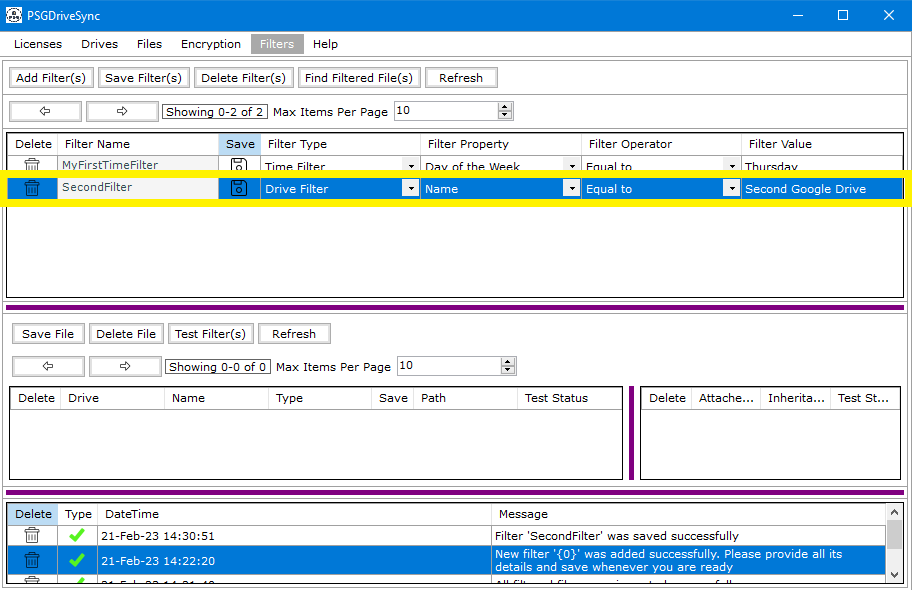
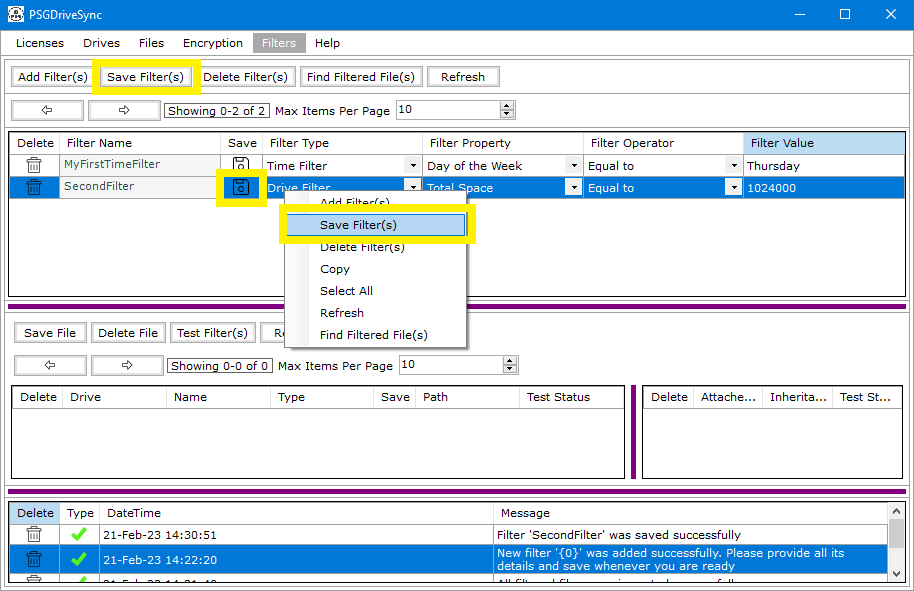
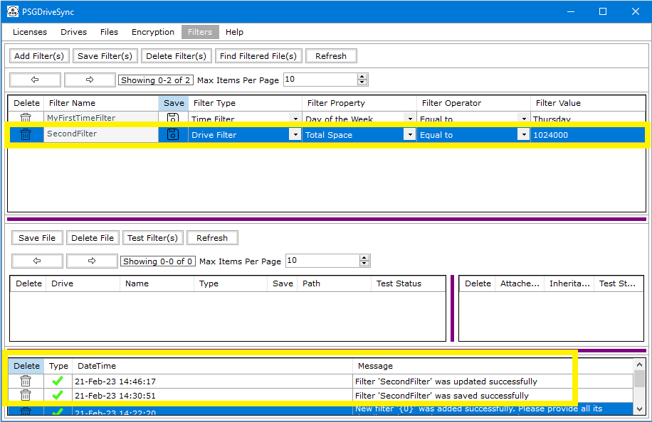

After a filter has been added initially then its name cannot change however rest of its properties i.e type, property, operator and value can be changed anytime. Following are the steps needed to be performed in order to save a filter's updated details.
|
1 |
Go to the "Filters" window and select the filter that you need to Save the settings for. |
 |
|
2 |
Click on "Save" to save the updated filter settings. |
 |
|
3 |
The result of the save operation should show in the messages window. |
 |